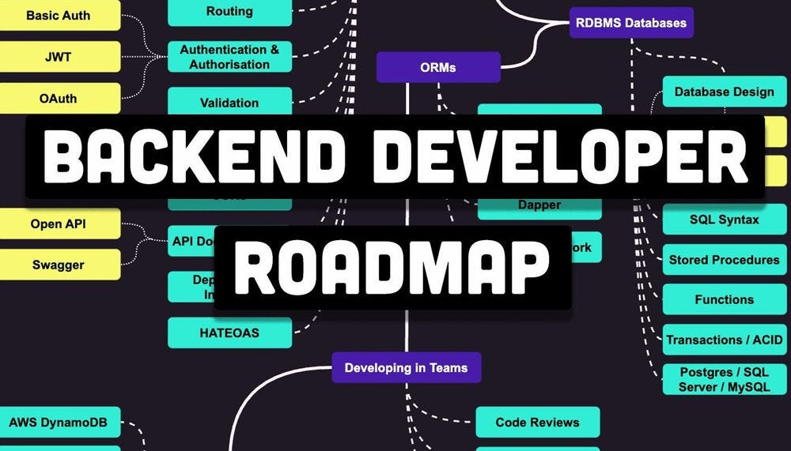

Back-end development means working on server-side software, which focuses on everything you can’t see on a website. Back-end developers ensure the website performs correctly, focusing on databases, back-end logic, application programming interface (APIs), architecture, and servers. They use code that helps browsers communicate with databases, store, understand, and delete data.
On a team, back-end developers collaborate with front-end developers, product managers, principal architects, and website testers to build the structure of a website or mobile app. Back-end developers must be familiar with many kinds of tools and frameworks, including languages such as Python, Java, and Ruby. They make sure the back-end performs quickly and responsively to front-end user requests.
